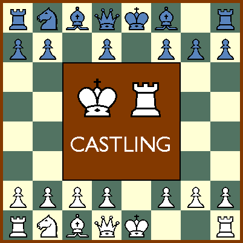
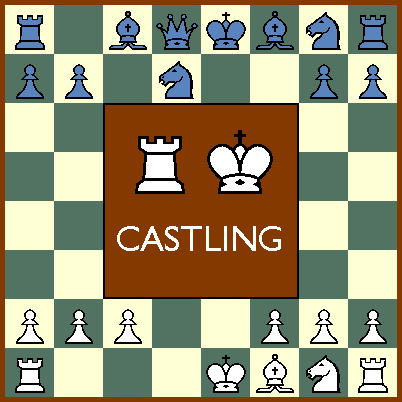
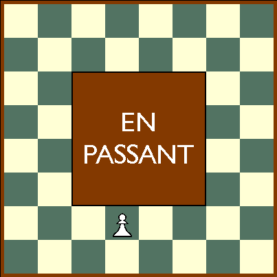
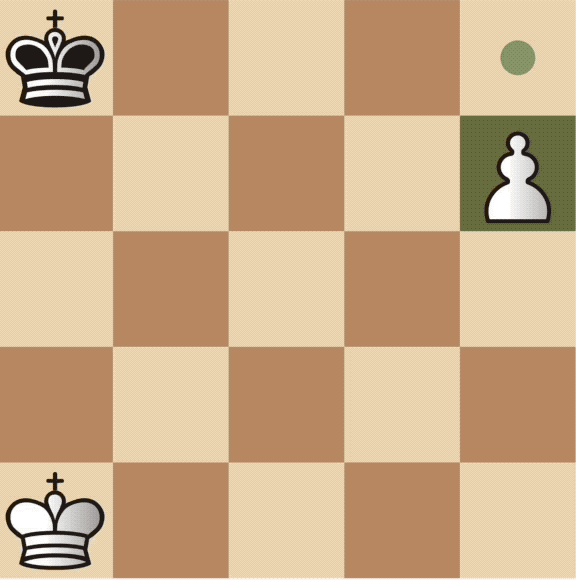
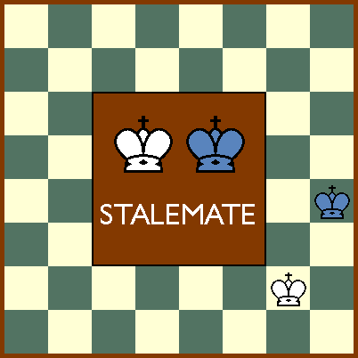

Introduction
Les échecs est un jeu de stratégie pour deux joueurs, joué sur un plateau de 64 cases. Chaque joueur a 16 pièces, composées d'un roi, d'une reine, de deux fous, de deux cavaliers, de deux tours et de huit pions.
Animations GIF
Pour mieux comprendre les déplacements des pièces, voici des animations GIF qui montrent comment chaque pièce se déplace :
Le roi se déplace d'une case dans toutes les directions.
La reine se déplace en diagonale, en ligne droite ou en oblique sur toutes les cases du plateau.
Les fous se déplacent en diagonale sur les cases de la même couleur que celle sur laquelle ils se trouvent au départ.
Les cavaliers se déplacent en « L », c'est-à-dire de deux cases dans une direction, puis d'une case perpendiculaire.
Les tours se déplacent en ligne droite dans toutes les directions.
Les pions se déplacent d'une case en avant, sauf lors de leur premier mouvement, où ils peuvent avancer de deux cases, et lorsqu'ils capturent une pièce, où ils se déplacent en diagonale.
Déplacements spéciaux
Il existe également des mouvements spéciaux :
- Le roque, où le roi et une tour peuvent échanger leur position, à condition que le roi n'ait pas été déplacé et que la tour ne soit pas bloquée.
- L'en passant, où un pion peut capturer un pion adverse qui vient d'avancer de deux cases lors de son premier mouvement, en le prenant comme s'il n'avait avancé que d'une seule case.
- La promotion, où un pion peut être promu en une autre pièce lorsqu'il atteint la huitième rangée du plateau.
Le roque
 L'en passant
La promotion
Comment gagner aux échecs
Pour gagner une partie d'échecs, il existe trois façons :
- Faire échec et mat : il s'agit de mettre le roi adverse en échec, sans que celui-ci puisse se déplacer sur une case où il ne serait plus en échec. Si cela se produit, la partie est gagnée.
- Gagner par abandon : si l'adversaire abandonne la partie, vous gagnez automatiquement.
- Gagner par le temps : si l'une des deux joueurs dépasse le temps imparti pour jouer, il perd la partie.
Il est également possible de faire match nul dans certaines situations :
- Pat : si le joueur n'a plus aucun coup légal à jouer, mais que son roi n'est pas en échec, la partie est considérée comme un match nul. 
- Nulle par accord : les deux joueurs peuvent décider de mettre fin à la partie en s'accordant sur un match nul.
- Nulle par répétition : si la même position se répète trois fois sur l'échiquier, la partie est considérée comme un match nul.
- Nulle par règle des 50 coups : si aucun pion n'a été déplacé et aucune pièce n'a été capturée au cours des 50 derniers coups, la partie est considérée comme un match nul.
Les checks et les défenses en échecs
Un joueur met son adversaire en échec lorsqu'il menace de capturer son roi à son prochain coup. Il existe plusieurs façons de se défendre contre un échec :
- Déplacer le roi sur une case sûre où il ne sera pas menacé d'être capturé.
- Interposer une pièce entre le roi et la pièce menaçante, si cela est possible.
- Capturer la pièce qui met le roi en échec.
Il est important de noter que chaque défense n'est pas toujours possible, car certaines pièces ne peuvent pas se déplacer ou être capturées à cause des règles du jeu. Il est donc crucial d'anticiper les coups adverses et de prévoir plusieurs plans de défense.
Voici quelques exemples de défenses possibles contre un échec :